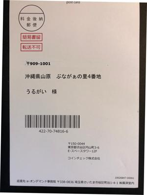

うるがいの話 ある日
最新: 仮想通貨うるがいとは 前提知識です
カニの画像をクリックすると『うるがいの話』サイトを表示します|
|
【うるがいの話】 うるがい(ｳﾙｶﾞｲ urugai)とは、『もずくがに』の名前でとても大きくなります。 |
|---|---|
|
|
【Got cat カミマヤーの話】 たながー（ﾀﾅｶﾞｰtanagaa）とは手長えびのことで、何種類かあり大きいのは車 エビぐらいになります。 |

|
【ぶながぁの話】 ぶながー(bunagaa)とは、赤い髪の毛、赤い身体、そして身長は１ｍ２０ｃｍ ぐらい、川の蟹を食べているの目撃された。場所は沖縄県国頭郡大宜味村のと ある村僕の隣近所に住んでいる爺さんから、聞いた話です。 |
|
|
【ギーマの話】 ギーマ(giima)とは、山原の里山に咲くスズランに似た、 花を付けます。実は食べられます、 気が付くと口の周りが紫になっています。 |
2021年11月19日 (金）仮想通貨
16:06

仮想通貨、入金処理までしたが・・・、次の手順が分からない。お、まだまだ
な。子供は、複数の取引先にリスク分散し運用している、図書館の本３冊読ん
だが。ハガキの画像は、本人確認の最後の手順である郵便書留の個人情報を画
像処理したものである。久々に画像処理をしたので、時間がかかった。継続し
て訓練しておかなければと思う。なお３冊の本はいずれも３年前に発行されて
いるので手続きの情報が古く、本人確認のため免許証以外に公的な機関が発行
した住所が確認できる６カ月以内の領収（私の場合はガスの領収書を使った）
を提示し、かつ郵便書留でくどいほど現住所を確定させている。さて、これか
ら投資の実践である。老人は新しい技術に疎く、動作が遅いのである。